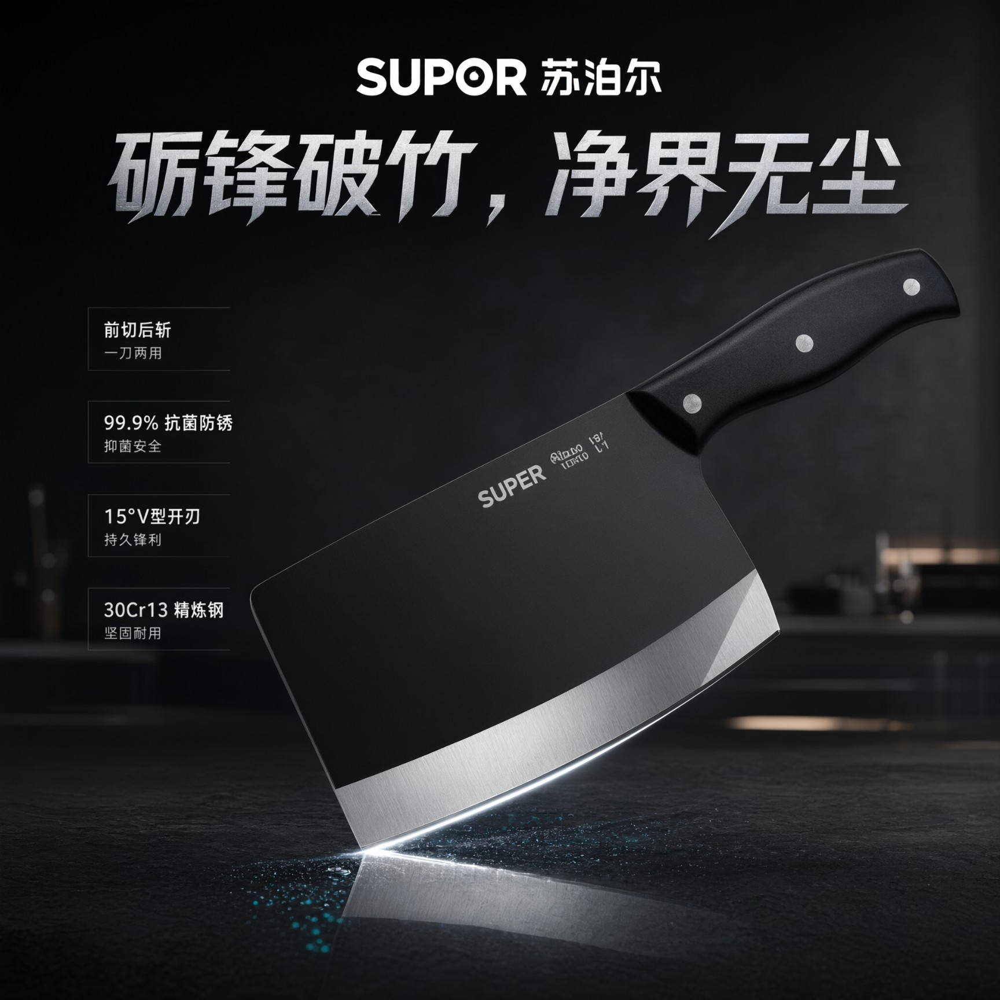
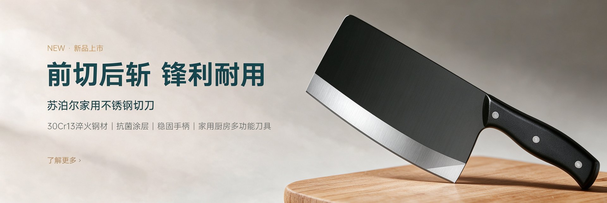
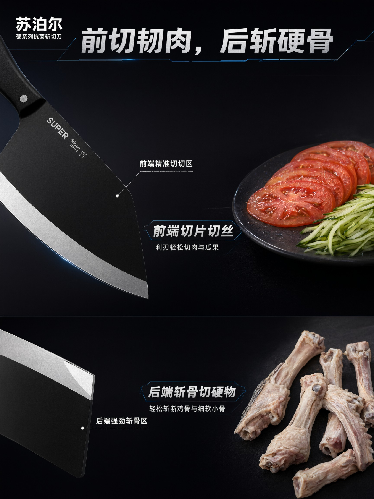
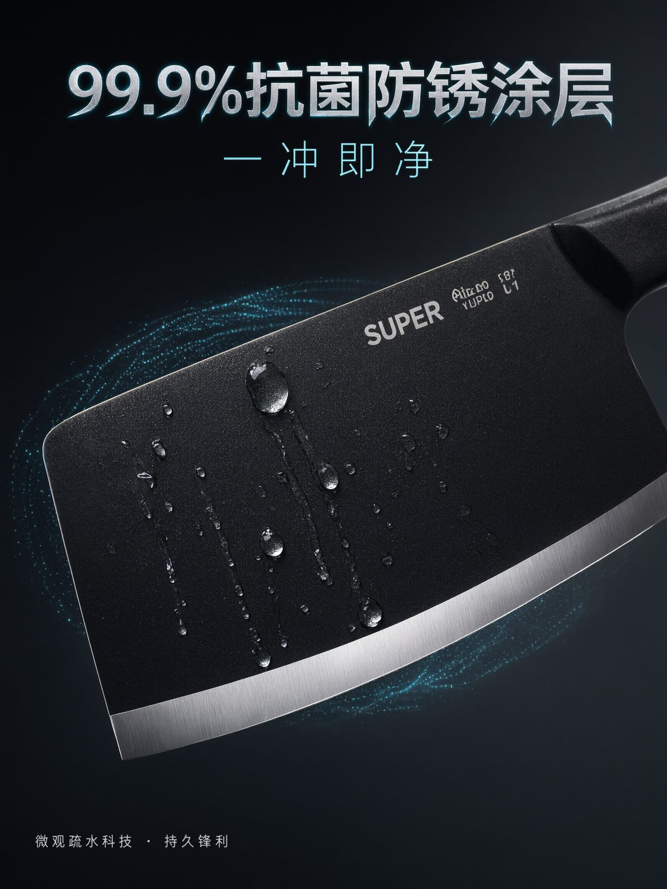
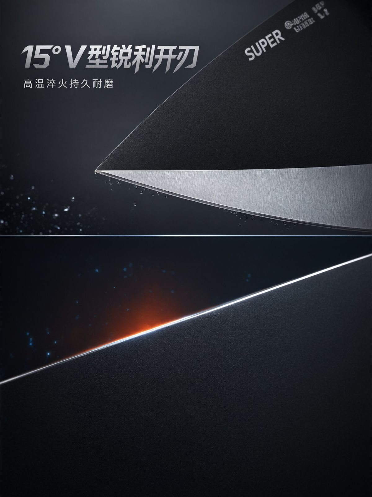
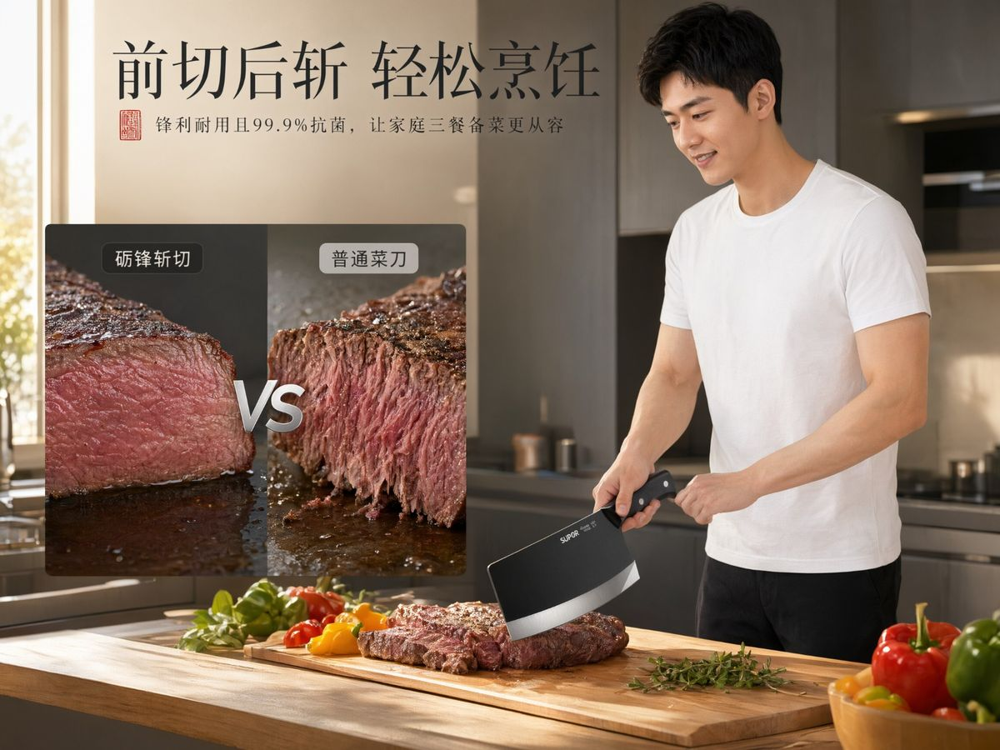
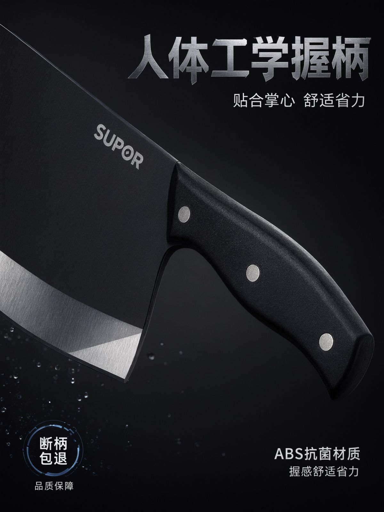
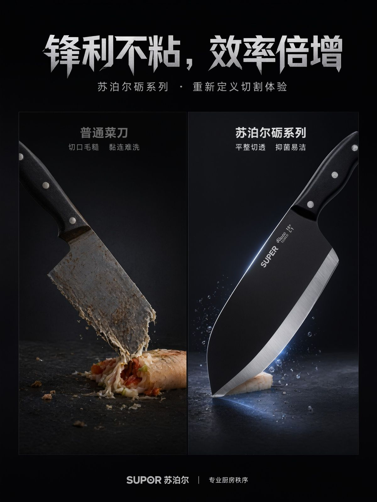
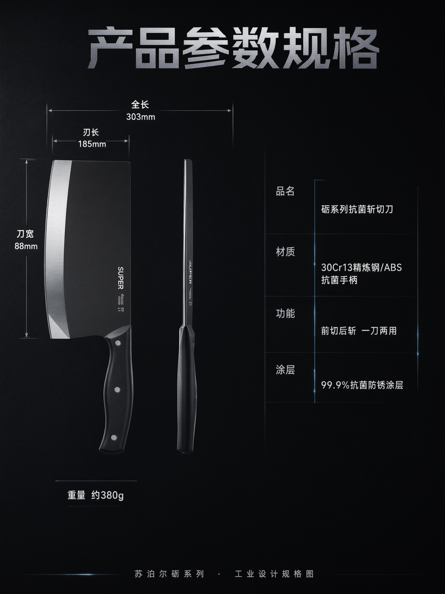

9 屏详情页 · 前切后斩 × 一刀两用，30Cr13 精炼钢、15° V 型开刃与 99.9% 抗菌涂层的功能说服。

以「前切后斩一刀两用」为记忆点，把百元价位段的高性价比翻译成可视化结构：前端利刃切、后端刀根斩。
30Cr13 精炼钢 1050°C 淬火、15° V 型开刃、99.9% 抗菌涂层三组工艺，用钢材特写与尺寸参数分屏建立可信度。








共 9 屏完整详情页，以上为代表性页面；完整项目含品牌锁版、参数体系与场景延展。